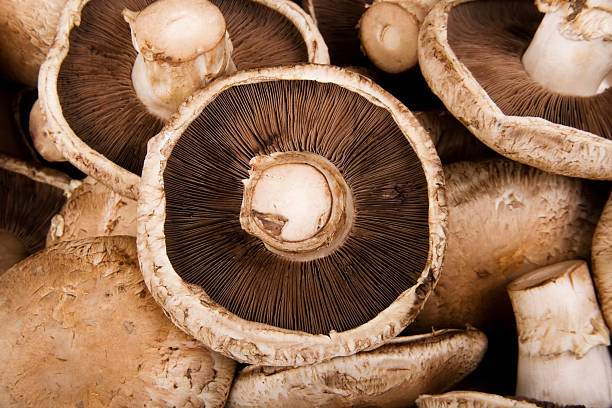
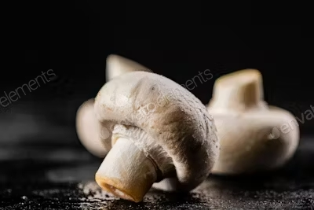

Portobello
Se caracteriza por su gran tamaño y su distintivo sombrero carnoso y oscuro, que puede medir hasta 15 centímetros de diámetro.

Cremini
Similar al champiñón blanco, pero más oscuro y de sabor más intenso. También se le conoce como "champiñón marrón".

Shiitake
Posee un sombrero grande y carnoso, de color marrón oscuro.

Champiniones
También conocido como champiñón blanco y se caracteriza por su sombrero redondeado y blanco, con una textura firme y un sabor suave y terroso.